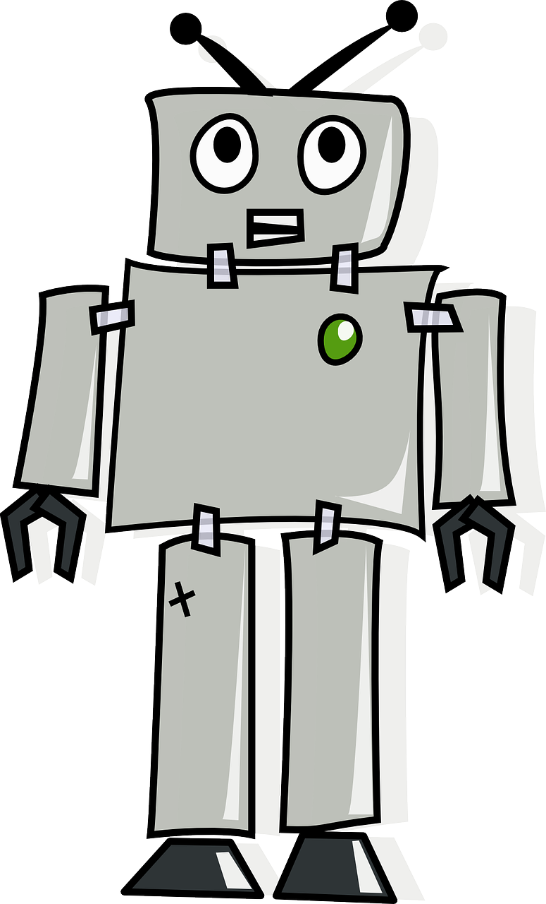

What is Artificial Intelligence?. What is Artificial Intelligence:
Artificial intelligence has the ability to learn and think of a computer program. John McCarthy
developed the term 'artificial intelligence' in the 1950s. He said, 'Every aspect of learning or any
other feature of intelligence can be explained in principle that a machine can be made to imitate
it. Machines will try to use language, form abstract, and use concepts, solve safe types of
problems for humans and improve themselves.
Examples of Artificial Intelligence:
AI is used today in a variety of technologies. For example,
Machine Learning - This helps computers work without programming. There are three
types of machine learning:
o Under supervision learning - samples can be recognized using labeled data sets
and then used to label new data sets.
o Non -led learning - Data set can be arranged according to how similar or different
they are.
Kimk Learning - After performing actions, the AI system is given opinion.
Automation - works can be enhanced when automation tools are worked with AI. Large
enterprise jobs can be created automatically, while AI changes in intelligence changes.
The machine Vision-Missions Vision uses analog conversion from a camera, digital
signal processing, and analog, to obtain and then analyze visual information. It is used in
signature analysis for medical analysis.
Self-run cars-suicide vehicles use deep learning, image identity, and machine vision to
ensure that the vehicle is in the proper lane as well as discarding pedestrians.
Robotics - Robotics is an engineering field focused on robot designing and
manufacturing. Nowadays, machine learning is being used to make robots so that they
can communicate with society.
History of artificial intelligence:
As mentioned above, the term 'artificial intelligence' was developed by John
McKarti for the first time in 1956 at the AI conference at Dartmot College. Later
this year, JC Shaw, Herbert Simon, and Alan Neville created the first AI software
program called 'Logic Theorest'.
However, a 'machine that they think' is from Maian civilization. In modern times,
there have been some important events since the arrival of electronic computers
that played an important role in the evolution of AI:
Artificial intelligence maturity (1943-1952): Two mathematicians Walter Pitts
and Warren S. McClichch published a 'logical calculus of everlasting ideas in
neurological activity' in the Journal of Mathematics of Mathematics. He described
the behavior of human neurons with the help of simple logical functions, which
encouraged English mathematician Alan Touring to publish 'Computing
Machinery and Intelligence', which included an exam. This touring test is used to
test the capacity of the machine to showcase intelligent behaviors.
Birth of artificial intelligence (1952-1956): Logic Theorest, the first AI program
was created in 1955 by Alan Neville and Herbert A Simon. It proved about 52
mathematics theories and improved the evidence of other ideas. Professor John
McCartasti developed the "artificial intelligence term" at the Dartmot conference,
and was accepted as an educational field.
Golden Airs-Endowment (1956-1974): After the invention of high-level
languages like Lesp, Kobol, and Forten, researchers were more excited about AI
to solve complex mathematical issues and created an algorithm. In 1966, Joseph
Wisenbam, a computer scientist, made the first chat boat called 'Eliza'. A year
later, Frank Rosen Blot built a computer called Mark 1 Peripper. This computer
was based on the biological nervous network (BNN) and learned. Through the test
and error method that was later developed as a strengthening learning. In 1972,
Japan built the first intelligent Humanoid robot called 'Wabot-1'. Since then, the
robot has been permanently prepared and trained to perform complex work in
various industries.
A height in AI (1980-1987): The first AI Winter (1974–1980) ended, and
governments began to look at how useful the AI system could be for the economy
and defense forces. Expert system and software were programmed to imitate the
human brain decision -making ability in machines. AL algorithms such as back
propaganda, which uses nerve networks to understand a problem and find the best
possible solution.
AI Winter (1987-1993): By the end of 1988, IBM successfully translated a set of
two linguistic sentences from English to French. There was further progress in the
field of AI and machine learning, and by 1989, Yan Likone successfully applied
back propaganda algorithm to identify handwritten zip codes.
How does artificial intelligence work:
The computers are good in the following process, that is, a series of steps to perform a task. If we
take computer steps to put a work into practice, it should be able to complete it easily. The steps
are nothing but the algorithm. An algorithm can be as easy as printing or predicting two
numbers, who will win the elections in the coming year!
So, how can we meet it?
Let's take an example of the prediction of the 2020 season.
First of all, what we need is a lot of data! Let's take data from 2006 to 2019.
Now, we will divide this data in a ratio of 80:20. 80 % of data is going to be our labeled data,
and the remaining 20 % will be our test data. Thus, we have the production for 100 % data that
has been obtained from 2006 to 2019.
What happens once we collect data? We will feed labeled data (train data), ie 80 % of data in the
machine. Here, the algorithm is learning from the figures that have been fed.
Next, we need to test the algorithm. Here, we open the test data, namely, the remaining 20 % of
the data. The machine gives us out. Now, we cross the machine with the original output of the
data and check its accuracy.
If we are not satisfied with the model when checking the accuracy, we adapt to the algorithm to
give the exact output or at least near the original output. Once we are satisfied with the model,
we then feed the new data to the model so that it can predict the prediction of the 2020 season.
Certification in Big Data Analytics
With the maximum data being fed to the system, the output becomes more and more precise.
Well, we have to note that none of the algorithms can be 100 % accurate. None of the machines
has achieved 100 % performance.
Dec 29, 2022